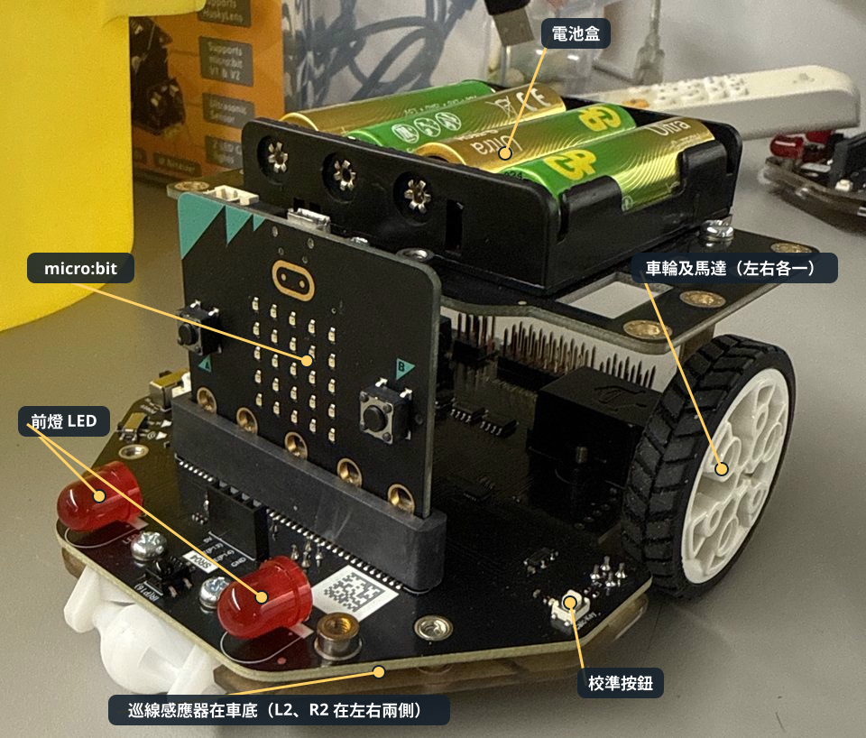
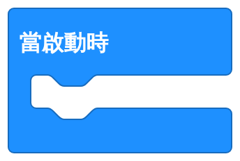
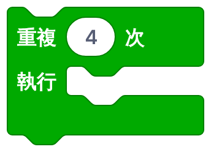

開始之前
今課 1–2 人一組，每組用一部電腦、交一份報告。第一行填用這部電腦的同學；兩人一組的話，在「組員二」填另一位同學。
完成今課後，你能夠：
- 用兩個變數 forward 和 turn 控制小車走正方形。
- 把程式下載到 micro:bit，用「測試 → 觀察 → 調整」令小車走得準。
本課滿分 50 分：真車試驗記錄 20、老師驗收 25、自我檢查 5。資料會自動儲存在這部電腦。
準備：分工、小車和 MakeCode
今次任務令小車沿一格地磚（30 cm）走出一個正方形，最後回到起點，車頭轉回原來方向。
兩人分工（每下載一次就對調）
甲：電腦改數字、下載程式、填記錄表
乙：小車放車、開關電源、觀察、看守路線
一人一組的同學兩份工作都要做。

器材（每組）
- 麥昆 Plus V2 小車、micro:bit、USB 線、電腦
1開啟 MakeCode，建立新專案
- 按這裏開啟：makecode.microbit.org，再按「新專案」。
- 專案名稱：
班別_學號_square（例如1A_12_square）。
2加入麥昆 Plus 擴展
- 在積木清單最下面按「擴展」。
- 整條貼上：
https://github.com/DFRobot/pxt-DFRobot_MaqueenPlus_v20，按 Enter。 - 選 maqueenPlusV2。成功後積木清單多了「麥昆Plus V2&V3」。

3今次要用的積木
| 積木 | 在哪裏找 | 作用 |
|---|---|---|
 | 基本 | 開電源後執行一次 |
| 變數 | 把數字存入變數 | |
| 麥昆Plus V2&V3 | 每個程式都要加，連接小車 | |
| 基本 | 等待（1000 ms ＝ 1 秒） | |
 | 迴圈 | 同一組動作做 4 次 |
| 麥昆Plus V2&V3 | 令馬達轉動 | |
| 麥昆Plus V2&V3 | 停車 |
速度一律用 50馬達積木的速度預設是 100，太快會衝過頭。記得每一塊都改成 50。
正方形程式
正方形 ＝（直行一條邊 ＋ 轉 90°）做 4 次。照右邊的程式砌出來。


只改兩個數字forward 控制每條邊走多遠；turn 控制每次轉多少度。其他數字不用改。
✚怎樣建立變數
- 按積木清單的「變數」→「建立一個變數…」。
- 輸入
forward，按「確定」。 - 再按一次「建立一個變數…」，輸入
turn，按「確定」。 - 「變數」清單就會有 和圓角的 forward、turn 積木，照程式圖拖出來用。
把程式下載到 micro:bit
每改一次數字，就要重新下載一次。
下載時小車的電源要關掉，車放在地上，不要放在桌上。
1接上 USB 線
- 確認小車電源關掉。micro:bit 可以留在車上。
- USB 線一端接電腦，另一端接 micro:bit 頂部。micro:bit 背面的黃燈會亮起。
2第一次：配對 micro:bit（只需做一次）
- 在 MakeCode 按「下載」旁邊的「⋯」→「連接裝置」。
- 按「下一步」，選 BBC micro:bit CMSIS-DAP，再按「連接」。
配對不到？改用拖放方法
- 按「下載」，瀏覽器會儲存一個
.hex檔。 - 開啟「檔案總管」，把
.hex檔拖到 MICROBIT 磁碟機。
3按「下載」，等黃燈停止閃動
- 按左下角紫色的「下載」。
- 黃燈快速閃動＝正在寫入；停止閃動＝完成。閃動時不要拔線。
4拔線、放車、開電源
- 拔掉 USB 線。
- 把小車放在一格地磚的一角，車頭對正磚縫。
- 開電源，立即縮手站開。小車等 1 秒就會起步，走完會自己停。
用 iPad？
iPad 不能用 USB 下載。請用「micro:bit」app 經藍牙配對 micro:bit，然後在 app 內開啟 MakeCode 專案並按「Flash」。
測試 → 觀察 → 調整 → 再下載
20 分第一次下載，小車通常不會走得準——這很正常。不斷重複這個循環：

觀察：用眼睛看磚縫
- 邊長：第一條邊走完，車頭停在磚縫上嗎？未到＝太短；過了＝太長。
- 轉角：轉完後，車身和磚縫平行嗎？未轉夠＝太少；轉過了＝太多。

調整：每次只改一個數字
| 看到 | 怎樣改 |
|---|---|
| 邊太短／太長 | forward 加或減 200 |
| 轉太少／太多 | turn 加或減 50 |
先調好 forward（邊長），再調 turn（角度）。同時改兩個，就不知道是哪一個有效。
真車試驗記錄表20 分
每下載一次就填一行。最後一欄會告訴你下一次改什麼。至少記錄 3 次。
出了問題？
| 現象 | 檢查 |
|---|---|
| 完全不動 | 電源開了嗎？有「初始化麥昆Plus」嗎？ |
| 改了數字但走法一樣 | 改完有沒有再按「下載」？ |
| 一直向前不停 | 每個動作後有「停止」嗎？ |
| 衝得太快、打滑 | 速度是不是 50？ |
老師驗收及自我檢查
30 分小車走得準了，就請老師來看一次完整的正方形。
自我檢查5 分
挑戰（做得快的組別）
走 2 × 2 格地磚的大正方形：只改一個數字，應該改哪一個？
總結及學習日誌
- 正方形 ＝（直行 ＋ 轉彎）× 4，用「重複 4 次」。
- 把要調整的數字放進變數：只改 forward 和 turn。
- 程式很少一次就對：測試 → 觀察 → 調整 → 再下載。
學習日誌（不計分）
你們試了幾次才成功？最後 forward 和 turn 是多少？
下一課預告巡線感應器：為小車加上「眼睛」，令它自己沿着黑線行走。
成績及交功課
每組下載一份成績報告（兩人一組時檔名有兩個名字），上傳到 Google Classroom／eClass。